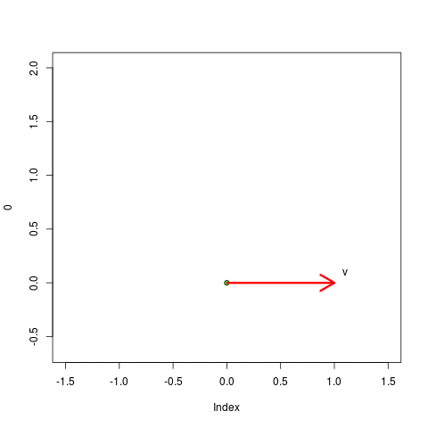

$\newcommand{\nul}{{\mathcal N}}$
$\newcommand{\col}{{\mathcal C}}$
এই পাতাটাকে বলা যেতে পারে আমার Linear Algebra বইটার লেজুড়৷ বই লেখার সময়ে অনেক হিসেব মাথায়
রাখতে হয়, যেমন পাতার সংখ্যা, ছাপার দাম, সময় ইত্যাদি৷ তাই যত কথা লিখতে চাই সব কিছু
বইয়ের পরিসরে আঁটিয়ে ওঠা দুষ্কর৷ সেই কারণেই এই পাতার জন্ম৷ যেমন ধরো তোমাদের মধ্যে কেউ কেউ
বইটা লেখার আগেই অনুরোধ করেছিলে JAM ইত্যাদির প্রশ্নোত্তর আলোচনা করতে৷ কিন্তু
বইয়ের কলেবরবৃদ্ধির ভয়ে সেটা করতে পারি নি৷ সেগুলো এই পাতায় দেব৷ বইতে ছাপার ভুলত্রুটি
যা বেরোবে, তাদেরও একটা তালিকা দিয়ে দেব এখানেই৷
দ্বিতীয় অধ্যায়ে 66 পাতার একেবারে নীচের দিকে আছে Excercise 3.
সেখানে অংকটা দেওয়া আছে $C[a,b]$ দিয়ে, কিন্তু সমাধানে ভুল করে আমি
$C[a,b]$-টাকে $C[0,1]$ বানিয়ে দিয়েছি৷ ভুলটা ধরেছে সোমক৷
90 পাতায় আছে এইটা--
লাল দিয়ে গোল করা vector-টা হওয়া উচিত $(1,1,1).$
ওই একই অংকে (Example 44) আরেকটা সূক্ষ্ম ভুল আছে৷ একটা set দিয়ে ${\mathbb R}^3$-এর basis
দেখাতে বলাছিল৷ আমি বইতে প্রথমে linearly independent দেখিয়ে তারপর বলেছিলাম যে set-টার
সাইজ যেহেতু $3 = dim({\mathbb R}^3),$ তাই ওটা একটা basis হবে৷ যুক্তিটা ভুল নয়৷ কিন্তু এর পিছনে কাজ করছে
dimension theorem. সেটা এসেছে এই অংকটার পরে৷ দুটো ভুলই ধরেছে শুভদীপ ঘোষ৷
101 পাতায় আছে এই অংশটা--
এখানে লাল করে দেখানো $\alpha_1$-টা আসলে $\alpha_2$ হবে৷ ভুলটা ধরেছে শুভদীপ ঘোষ৷
111 পাতায় আছে এই অংশটা--
এখানে লাল করে ঘিরে দেওয়া ${\mathbb R}$-টা হবে ${\mathbb C}.$ ভুলটা ধরেছে অয়ন৷
প্রথমেই দ্যাখো $(0,0,0)$ কোন কোন set-এর মধ্যে আছে৷ না থাকলে, তাদের আর subspace হয়ে
ওঠা হল না৷ এতেই $(B)$ আর $(D)$ বাদ হয়ে যাবে৷ তারপর দ্যাখো $(x,y,z)$থাকলেই $(-x,-y,-z)$-ও
থাকছে কিনা৷ এতে $(C)$-ও বাদ যাবে৷
Matrix-আকারে লিখে নাও, পাবে
$$\left[\begin{array}{ccccccccccc}1&1&0\\0&1&1\\1&0&1
\end{array}\right].$$
এর rankযে $3$ সে তো চোখে দেখেই বোঝা যাচ্ছে৷ সুতরাং nullity হবে $3-3=0.$
তার মানে উত্তর হল $(D).$
Inconsistent কখন হয়? যখন LHS-গুলোর মধ্যে কোনো সম্পর্ক থাকে যেটা RHS-গুলোর মধ্যে
থাকে না৷ এখানে দ্বিতীয় equation-টার LHS থেকে প্রথমটার LHS বিয়োগ করো, তার পর
$\frac23$ দিয়ে গুণ করলে তিন নম্বর equation-টার LHS পাবে৷ এটা খালি খানিকক্ষণ চোখে দেখে
বোঝা৷ সুতরাং consistent হবার জন্য একই সম্পর্ক RHS-এও থাকতে হবে, মানে $b_3=\frac23(b_2-b_1)$
হতে হবে৷ খুঁজে দ্যাখো কোনো ক্ষেত্রে এই শর্তটা ক্ষুণ্ণ হচ্ছে কিনা৷ উত্তর হবে $(C).$
Traingular matrix-এর eigenvalue-রা হল ওর diagonal entry-গুলোই, মানে এক্ষেত্রে $a,b$
অর $3.$ তার মানে বলে দিয়েছে $a+b+3=10$ এবং $3ab=30.$ তা থেকে $a^2+b^2$ বার করতে
নিশ্চয়ই দমকল ডাকতে হবে না?
আমরা আমাদের Linear Algebra বইতে শিখেছিলাম কি করে dimension-কে degrees of freedom
বলে ভাবলে সুবিধা হয়৷ সেইভাবে দেখলে dimension হল সবচেয়ে কম কতগুলো সংখ্যা দিয়ে ওই
vector space-এর যে কোনো vector-কে প্রকাশ করা যাবে৷ এখানে যেকোনো দুটো পরপর
$x_i$ বলে দিলে তুমি তদের যোগ করে পরের $x_i$-টা বার করে ফেলতে পারবে৷ তার
মানে পুরো গল্পটা শুরু করার জন্য খালি $x_1$ আর $x_2$ জানাই যথেষ্ট, এবং
এর চেয়ে কম তথ্যে কাজ চলবে না৷ তার মানে dimension দাঁড়াচ্ছে $2.$
লক্ষ কর যে $A(A-I)=O.$ এ থেকে বোঝা যাচ্ছে যে $\col(A-I)\subseteq \nul(A).$ যদি $v\in \nul(A)$
তবে $Av = 0,$ সুতরাং $v = -(Av - v) = -(A-I)v \in \col(I-A).$ সুতরাং $\col(I-A) = \nul(A).$
অতএব এদের dimension-ও সমান হবে৷ সেটাই তো দেখাতে বলেছিল!
এখানে $V$ হল $A$-র nullspace. সুতরাং তোমাকে $A$-র nullity বার করতে
বলা হচ্ছে৷ আমরা জানি যে $nullity(A) = 3-r(A),$যেহেতু $A$-র $3$-টে column আছে৷
$A$-র প্রথম দুটো row কেউ কারো multiple নয়, সুতরাং $r(A) \geq 2$হবেই৷ $det(A)$
বার করে দ্যাখো, যদি $0$হয় তবে $r(A) < 3$ নয়তো $r(A)=3.$
প্রথমে $W_1\cap W_2$-এর সদস্যরা দেখতে কিরকম বুঝে নিই৷ এদের দেখতে এইরকম--
$$\left[\begin{array}{ccccccccccc}a&-a\\-a&d
\end{array}\right].$$
লক্ষ কর একে প্রকাশ করতে দুটো সংখ্যা জানাই যথেষ্ট, $a$ আর $d.$ এর চেয়ে কম সংখ্যা দিয়ে কাজটা
করা যাবে না৷ তাই $dim(W_1\cap W_2) = 2.$
একই রকম যুক্তিতে $dim(W_1) = dim(W_2) = 3.$ সুতরাং $dim(W_1+W_2) = dim(W_1)+dim(W_2)-dim(W_1\cap W_2) = 3+3-2 = 4.$
সুতরাং উত্তর হল $(B).$
অংকটা একটু ভুল আছে৷ $D:P_n\rightarrow P_{n-1}$ আর $T:P_n\rightarrow P_{n+1}$-কে মোটেই compose করে $DT$
বা $TD$ বানানো যায় না৷ আসলে ওরা $D$ আর $T$-এর সংজ্ঞায় $D_n$ আর $T_n$ লিখতে
চেয়েছিল, আর $DT$ না লিখে ওদের লেখা উচিত ছিল $D_{n+1}T_n.$ একইভাবে $TD$-র জায়গায় হওয়া
উচিত ছিল $T_{n-1}D_n.$
এখানে $D$-এর সংজ্ঞায় একবার চোখ বুলিয়েই কিন্তু ওটাকে চিনতে পারা উচিত৷ ওটা আমাদের খুবই পরিচিত জিনিস--differentiaion!
আর $T$ হল $x$ দিয়ে গুণ করা৷
যদি $p$ কোনো polynomial হয় তবে $DT(p) = \frac{d}{dx}(xp(x)) = p(x)+xp'(x).$
একইভাবে $TD(p) = xp'(x).$ সুতরাং $(DT-TD)(p) = p(x).$ অর্থাৎ
$DT-TD$ হল আসলে identity function! এর matrix হল identity
matrix (যার সাইজ $n\times n),$ সে তুমি যাই basis-এর সাপেক্ষে নাও না কেন!
সুতরাং trace-টা হবে $n.$
এখানে $A$-র diagonal-এ ঠিক $p$-খানা $a$ আর $q$-খানা $b$ আছে৷
ধরো $a$-গুলো সব শুরুতে আছে, $b$-গুলো আছে তারপরে৷ তাহলে
$$A = \left[\begin{array}{ccccccccccc}aI_p & O\\O & bI_q
\end{array}\right].$$
এবার $B$-কেও একইভাবে partition করে নাও--
$$B = \left[\begin{array}{ccccccccccc}W & X\\Y & Z
\end{array}\right].$$
তাহলে $AB = BA$ থেকে পেয়ে যাবে $aX = bX$ এবং $aY=bY.$ যেহেতু $a\neq b $দেওয়া আছে,
সুতরাং এর মানে $X = O$ এবং $Y = O.$
তার মানে $B$-এর block চারটের মধ্যে $W,Z$ রইল arbitrary. এখন $W$-এর
সাইজ হল $p\times p,$আর $Z$-এর
$q\times q.$ সুতরাং $B$-কে প্রকাশ করতে মোট $p^2+q^2$-টা সংখ্যা লাগছে৷ তাই
dimension-টা হবে $p^2+q^2.$
এখানে যেটা মনে রাখলে সুবিধা হবে সেটা এই যে, যদি $T:U\rightarrow V$ একটা linear transformation হয়
আর $\{u_1,...,u_n\}$ যা খুশি একটা basis হয় $U$-এর, তবে $T(u_1),...,T(u_n)$-এর
বিষয়ে কিছুই বলা যায় না, ওরা $V$-এর মধ্যে যা খুশি হতে পারে৷ সুতরাং আমাদের অংকে
$T(e_1),...,T(e_6)$ হল $W$-এর মধ্যে যা খুশি কয়েকটা vector (এমন কি সবাই একই vector
হলেও আপত্তি নেই!)৷ এই কথাটা মাথায় রেখে প্রথম choice-টা দ্যাখো৷ যদি তিনটে যা খুশি
vector দিয়ে $W$-কে span করা যায়, তবে খালি সেটুকুর ভিত্তিতেই ওদেরকে
linearly independent মনে করার কোনোই কারণ নেই৷ সুতরাং $(A)$ ঠিক নাই হতে পারে৷
এবার $(B)$-এর দিকে চোখ ফেরাই৷ বলেই দিয়েছে যে $T:{\mathbb R}^6\rightarrow W.$ সুতরাং $T({\mathbb R}^6)\subseteq W$ কেউ
আটকাতে পারছে না৷ আবার $span\{T(e_2),T(e_4),T(e_6)\} = W.$ সুতরাং $W$-এর সর্বত্রই $T$
পৌঁছতে পারছে৷ অতএব $T({\mathbb R}^6) = W$ হবেই৷ তার মানে $(B)$ অই অবশ্যই ভুল৷
মনে রেখো এক্ষুণি কি বললাম--$T(e_1),...,T(e_6)$ যা খুশি হতে পারে৷ সুতরাং $T(e_2),T(e_4),T(e_6)$ মিলে
$W$-কে span করে জানলে তা থেকে $T(e_1),T(e_3),T(e_5)$-দের বিষয়ে কিছুই সিদ্ধান্ত করা যায়
না৷ অতএব $(C)$-কেও বিদায় দিতে হল৷
পড়ে থাকে $(D).$ তার জন্য চট্ করে $dim(W)$ কি কি হতে পারে ভাবো তো! যেহেতু $T(e_2),T(e_4),T(e_6)$
দিয়ে $W$-কেspan করা যায়, সুতরাং $dim(W)\leq 3$ হবেই৷ তার মানে $nullity(T) = 6-dim(W)\geq 6-3 = 3.$
এটা বলতে পারলাম কারণ $(B)$ নিয়ে ঘাঁটাঘাঁটি করার সময়েই দেখেছিলাম যে $Im(T) = W.$ সুতরাং
$ker(T)$-টা আর যাই হোক trivial হতে পারে না৷ তাই $(D)$ সঠিক হতে বাধ্য!
এখানে দুইভাবে ভাবতে পারো৷ $W$-এর প্রতিটা element দেখতে $(x,y,z)$-এর মত যেখানে $x,y,z\in{\mathbb R}.$
যদি আর কোনো বাড়তি শর্ত না থাকত তবে $W = {\mathbb R}^3$ হত এবং সেক্ষেত্রে তার dimension হত $3.$
কিন্তু এখানে বাড়তি শর্ত আছে৷ প্রথম শর্ত হল $2x+2y+z=0.$ এর জন্য $dim(W)$ এক কমে যাবে৷
এর পরে আছে $3x+3y-2z=0.$ এটা একটা নতুন শর্ত, অতএব $dim(W)$ আরো এক কমল৷ এর পর আছে
$x+y-3z=0.$ এই শর্তটা কিন্তু আসলে নতুন কিছু নয়, কারণ দ্বিতীয় শর্তটা থেকে
প্রথম শর্তটাকে বিয়োগ করলেই এটা আসে৷ সুতরাং তৃতীয় শর্তটার জন্য $dim(W)$ আর
নতুন করে কমবে না৷ তার মানে $dim(W) = 3-1-1 = 1.$
যদি $A$ একটা $n\times n$ সাইজের matrix হয়, আর $a$ হয় কোনো সংখ্যা তবে জানো নিশ্চয়ই
যে $|aA| = a^n |A|$ হয়৷ সেটা লাগালেই দেখবে উত্তর হল $(D)$
(a) লক্ষ কর যে $D^n = PA^n P^{-1} = O$ হবে৷ বলা আছে যে $D$ হল
diagonal. আমরা জানি যে diagonal matrix-দের গুণ করলে ফের diagonal matrix-ই পাওয়া যায়,
এবং diagonal entry-গুলোও নিজেদের মধ্যে গুণ হয়ে যায়৷ সুতরাং $D$-এর
diagonal entry-গুলো যদি $d_i$ হয়ে থাকে, তবে $D^n$-এর
diagonal entry-রা হবে $d_i^n.$ এক্ষুণি দেখলাম যে $D^n = O,$ তার মানে
$d_i^n$-রা সবাই $0,$ মানে $d_i$-রা সবাই $0.$ সুতরাং $D=O,$ অতএব $A = P^{-1} D P = O.$
(b) আমার Linear Algebra বইতে করা আছে৷
প্রথমে চট্ করে দেখে নাও যে $H_1, H_2 $দুজনেই $G$-এর subgroup. প্রশ্ন হল ওরা normal
কিনা৷ কোনো subgroup $H$-কে normal দেখানোর একটা সহজ কায়দা হল এটা দেখানো
$$\forall g\in G~~\forall h\in H~~ghg^{-1}\in H.$$
সুতরাং এখানে $P$-এর বেলায় দেখতে হবে কোনো matrix-এর determinant
যদি $1$ হয়, তবে তার সাথে similar যে কোনো matrix-রই
determinant-টা $1 $হয় কিনা৷ অবশ্যই হয়, সুতরাং $P$সঠিক৷
$Q$-এর বেলায় প্রশ্ন হল upper triangular matrix-দের সঙ্গে similar
matrix-রা upper triangular হতে বাধ্য কিনা৷ এখানে উত্তর হল, না৷ আমরা
Schur decomposition থেকে জানি যে, যে কোনো square matrix-ই upper
triangular matrix-এর সঙ্গে similar.
অতএব উত্তর হবে $(B).$
ধরো $A$-র eigenvalue-গুলো হল $a,b,1.$ তাহলে $a+b+1=3$ এবং $ab=2$
দোয়া আছে৷ এ থেকে $a,b$ বের করে ফেলতে পারবে৷ এবার মনে রেখো যে $p(x)$ কোনো polynomial হলে
$p(A)$-র eigenvalue-রা হবে $p(a),p(b),p(1).$
সঠিক উত্তর হল $(B).$ কারণটা আমাদের বইতে বোঝানোই আছে, তাই নতুন করে আর এখানে লিখলাম না৷
Matrix দিয়ে চিন্তা কর৷ তাহলে $T_1$ হল একটা $m\times n$ সাইজের matrix, এবং
$T_2$-এর সাইজ হল $n\times m.$ সুতরাং $T_1T_2$ হচ্ছে $m\times m.$ সেটা যখন
nonsingular (যেহেতু bijective linear transformation-এর matrix-রা nonsingular
হয়), তার মানে $r(T_1T_2) = m.$ আমরা জানি যে গুণ করলে matrix-এর rank কখনো বাড়তে
পারে না, তাই $r(T_1),r(T_2)$ দুজনেই $r(T_1T_2) = m$-এর সমান বা বড়৷ এদিকে ওদের এক জনের row-সংখ্যা
$m,$ অন্যজনের column-সংখ্যা $m.$ সুতরাং $r(T_1),r(T_2)+m$ না হয়ে যায় না, মানে
উত্তর হল $(D).$
(a) কি করে এগোতে হবে সেটা ঠিক করা সহজ৷ এখানে তিনটে equation আছে আর তিনটে unknown,
$x,y,z.$ সুতরাং coefficient matrix-টা হল square. যদি এটা nonsingular হয়
তবে unique solution থাকবে৷ গোলমাল হবে singular হলে, মানে determinant-টা শূন্য হয়ে
গেলে৷ গোলমাল মানে, হয় কোনো solution থাকবে না (যেটা চেয়েছে) আর নয়তো একাধিক solution
থাকবে৷ সুতরাং প্রথম কাজ হবে determinant-টা বার করে ফেলা ($c$-এর ফর্মুলা হিসেবে)৷ যেহেতু
$c$ আছে দুইজায়গায়, তাই determinant-টা হবে $c$-এর একটা quadratic. এবার দেখতে
হবে $c$-এর কোন কোন value-তে determinant-টা শূন্য হয় (মানে গোলমাল বাঁধে)৷ সম্ভবতঃ
দুটো value পাবে (যেহেতু quadratic)৷ তারপর দেখতে হবে কোন value-র জন্য inconsistent
হবে৷ এই গেল পরিকল্পনার পালা৷ এবার হাতেকলমে এগোই৷
Determinant-টা দাঁতে দাঁত চেপে বার করে ফেলা যায়৷ তবে কাজটা একটু সহজ হবে যদি প্রথম
equation-টা ব্যবহার করে পরের দুটো থেকে $x$-টা বিদায় করে নিতে পারি৷ তাহলে হবে
$$\begin{eqnarray*}
x+2y+3z & = & 1,\\0x + y + (c-9)z &=& -1,\\0x+(c-4)y+6z & = & 1.
\end{eqnarray*}$$
এর coefficient matrix-এর determinant হচ্ছে
$$\left|\begin{array}{ccccccccc}1 & 2 & 3\\0 & 1 & c-9 \\ 0 & c-4 & 6\end{array}\right|=6-(c-4)(c-9) = -30+13c-c^2 = -(c-3)(c-10).$$
সুতরাং গোলমাল বাঁধবে $c=3$ হলে আর $c=10$ হলে৷ গোলমালটা কি সেটা বোঝার
জন্য খালি $y,z$-ওয়ালা দ্বিতীয় আর তৃতীয় equation দুটো দেখাই যথেষ্ট,
কারণ $y,z$ যদি বেরিয়ে যায় তবে প্রথম equation-টা থেকে $x$-ও আপনেই বেরিয়ে যাবে৷
সুতরাং গোলমাল যা হবার $y,z$-এই হবে৷ যদি $c=3$ নিই, তবে
$$\begin{eqnarray*}
y -6z &=& -1,\\-y+6z & = & 1,
\end{eqnarray*}$$
যার অসংখ্য solution আছে৷ সুতরাং আমরা যে গোলমালটা চাইছিলাম সেটা হল না৷ যদি $c=10$
বসাই, তবে
$$\begin{eqnarray*}
y + z &=& -1,\\6y+6z & = & 1,
\end{eqnarray*}$$
যেটা অসম্ভব৷ সুতরাং উত্তর হল $c=10.$
(b) এটা একেবারেই সোজা অংক৷ Subspace দেখানোটা তো closure property দুটো এবং nonempty
দেখালেই হবে৷ একটা $n$-degree-র polynomial-এ $n+1$-খানা coefficient
থাকে৷ সুতরাং $dim(V)=n+1.$ তার উপর একটা শর্ত চেপেছে, তাই dimension-টা এক কমে $n$
হয়েছে৷ সেটা বোঝা তো সহজ, কিন্তু লিখব কি করে? প্রথমে $V$-এর একটা general সদস্যর
চেহারা দেখা যাক--
$$a_0 + a_1x + \cdots + a_n x^n.$$
তাহলে $W$-এর সদস্যপদ পেতে হলে এর বাড়তি যে শর্তটা পালন করতে হচ্ছে সেটা হল
$$a_0 + \frac12a_1 + \cdots + \frac{1}{n+1}a_n =0.$$
সুতরাং আমাদের বইয়ের degrees of freedom-এর কায়দায় বলতে পারি যে $a_0,....,a_{n-1}$ জানলেই
$a_n$ বলে দিতে পারব, মানে degrees of freedom হচ্ছে $n.$ সুতরাং
$W$-এর সদস্যদের general চেহারা হল
$$a_0 + a_1x + \cdots + a_{n-1} x^{n-1}+\left(-a_0-\frac12a_1-\cdots-\frac1na_{n-1}\right)x^n.$$
ঘাবড়ে যেও না, $a_n$-কে বাকি $a_i$-দের ব্যবহার করে লেখায় এটা তৈরী হয়েছে৷ এবার $a_i$-দের
এক জায়গায় জড় করলে হবে
$$a_0(1-x^n) + a_1(x-\frac12x^n) + \cdots + a_{n-1} \left(x^{n-1}-\frac1nx^n\right).$$
তার মানে $W$-এর সদস্যরা হল $a_0p_0+\cdots+a_{n-1}p_{n-1},$
যেখানে
$$p_k=x^k-\frac{1}{k+1}x^{k+1}.$$
আমরা দেখাব যে $\{p_0,...,p_{n-1}\}$ হল $W$-এর একটা basis. এটা যে generating সে
তো দেখাই যাচ্ছে৷ Independent দেখানোর জন্য যে কোনো linear combination নিয়ে শূন্যর
সঙ্গে সমান করলেই যাবতীয় coefficient শূন্য হয়ে যাবে৷ সুতরাং $W$-এর একটা basis পেলাম
যার সাইজ $n.$ মানে $dim(W)=n.$
(a) এই রকম অংক আমাদের Linear Algebra বইতেই আছে৷ $adj(A)A = |A|I$ হয়, তা থেকেই হয়ে
যাবে৷
(b) এইটা অংকটা একটু ছবি দিয়ে ভাবলে সুবিধা হবে৷ ধরো $n=3.$ আর $v_1=(1,0,0)$ এবং
$v_2=(1/2,1/2,0).$ তাহলে আমরা $v_1$-কে $v_2$-তে নিয়ে যেতে পারি অনেক
রকম linear transformation দিয়ে৷ আমরা এখানে এইভাবে এগোব৷ প্রথমে $v_1$-কে
ঘুরিয়ে $v_2$ বরাবর নিয়ে আসব৷ এতে ওরা একই লাইনে এসে যাবে৷ কিন্তু $v_1$ আর
$v_2$-র দৈর্ঘ্য সমান নাও হতে পারে (যেমন এখানে $v_1$-এর দৈর্ঘ্য
$1,$ আর $v_2$-র $1/\sqrt2.$) তাই আমরা এবার উপযুক্ত কোনো সংখ্যা দিয়ে গুণ করে দৈর্ঘ্যটা সমান
করে দেব৷ যেমন এখানে $v_1$-কে প্রথমে $45^\circ$ ঘুরিয়ে $\sqrt2$ দিয়ে ভাগ করে দেব৷ ব্যস্
এই হল আমাদের linear transformation. ছবিতে দেখতে কিরকম হবে সেটা একটা ছোট্টো animation করে
দেখিয়েছি৷
এতে কেন কাজ হবে দ্যাখো৷ এখানে
rotation যখন করলাম
সেটা সম্পূর্ণই $x$-$y$ plane-এর সীমাবদ্ধ ছিল৷ তার মানে
$2\times 2$ matrix-এর কাজ৷ এই matrix-টার কোনো real
eigenvalue নেই, মানে দুটো complex conjugate eigenvalue আছে৷ অতএব দুটো distinct eigenvalue
এখানেই পেয়ে গেলাম৷ এবার লক্ষ কর যে $z$-axis-টা অপরিবর্তিত আছে, মানে $(0,0,1)$
হল একটা eigenvector যার জন্য eigenvalue হল $1.$ সুতরাং তিনটে distinct eigenvalue
পাওয়া যাচ্ছে৷
এবার দেখি একই কাজ কিভাবে in general করা যায়৷ এর জন্য প্রথমে আমরা $\{v_1,v_2\}$-কে
${\mathbb R}^n$-এর একটা basis-এ extend করব, এবং তার উপরে Gram-Schmidt লাগিয়ে একটা
ONB পাব, $\{u_1,...,u_n\}.$ এবার $u_1,u_2$ দিয়ে যে plane-টা তৈরী হয় সেখানে
প্রথমে rotation, বং তারপরে দরকার হলে scale করে $v_1$-কে $v_2$-তে পাঠাব৷
বাকি $u_i$-দের অপরিবর্তিত রাখব৷ ফলে যে linear transformation-টা পাব তার matrix-টা
হবে
$$\left[\begin{array}{ccccccccccc}aR & O\\O & I
\end{array}\right],$$
যেখানে $R$ হল $2\times 2$ rotation matrix-টা, $a$ হল কতটা scale
করেছি, আর বাকি $I$-টা বলছে যে অবশিষ্টরা অপরিবর্তিত আছে৷ এখানে $R$-এর দুটো complex conjugate eigenvalue
আছে, আর $I$-এর eigenvalue আছে $1.$ সুতরাং তিনটে distinct eigenvalue পাচ্ছি৷
$(5,6)$-কে লিখে ফ্যালো $(1,2)$ আর $(0,1)$-এর linear combination হিসেবে৷
$$(5,6)=5(1,2)-4(0,1).$$
সুতরাং
$$T((5,6))=5T((1,2))-4T((0,1))= 5(2,3)-4(1,4)=(6,-1).$$
এখানে $e_1$ যাচ্ছে $e_3$-তে, $e_3$ যাচ্ছে $e_1$-এ, আর $e_2$ অপরিবর্তিত
থাকছে৷ সুতরাং (A) যে ভুল বুঝতেই পারছ৷ কারণ $e_1$ গিয়ে পড়ছে
$e_3$-তে যেটা $span\{e_1,e_2\}$-র বাইরে৷
আর এটা দেখাই যাচ্ছে যে $r(A) = 3.$ সুতরাং $nullity(A)=3-r(A) = 0.$ অতএব
(D) হচ্ছে না৷
(B) আর (C) দুটোই eigenvalue আর eigenvector নিয়ে,
সুতরাং ভেবে নিই এরা কি কি হতে পারে৷ লক্ষ কর যে কোনো $(a,b,c)$-কে $A$ দিয়ে গুণ করলে
$(c,b,a)$ হয়, মানে প্রথম আর শেষ component দুটো স্থানবিনিময় করে৷ বুঝতেই
পারছ যে এই কাজ পরপর দুইবার করলে সবাই যথাস্থানে ফিরে আসবে, মানে $A^2=I.$ তাই
যদি $\lambda$ হয় $A$-র eigenvalue তবে $\lambda^2 = 1$ হবেই৷ যেহেতু
$1$-এর মোটে দুটো square root, তাই (B) হতে পারে না৷
কিন্তু (C)-ও ভুল!!! সেটা সরাসরি দেখা যায় এইভাবে৷ Eigenvector হবে
$(a,0,a)$ আকারের
আর $(0,b,0)$ আকারের৷
এটা skew symmetric matrix, এবং order হল $3,$ যেটা odd. সুতরাং $|A|=0,$
মানে $A$ এখানে nonsingular হতে পারে না৷ তাই $(A),(B)$ বাদ৷
যদি $a=1,b=c=0$ নিই উদাহরণস্বরূপ, তবে $r(A)=2.$ সুতরাং (D) বাদ৷
(a) এমন একটা $T$ নাও যেটা সবকিছুকে $90^\circ$ ঘুরিয়ে দেয়৷ তাহলে $T^2$ লাগালে,
মানে পরপর দুবার $T$ লাগালে মোট $180^\circ$ ঘুরে যাবে, অর্থাৎ $v$ যাবে $-v$-তে৷
ছবি দেখে নাও৷

এরকম একটা $T$ হল
$$\left[\begin{array}{ccccccccccc}0 & -1\\1 & 0
\end{array}\right].$$
এটা কি করে পেলাম? $90^\circ$ ঘোরালে (counterclockwise) $(1,0)$ যায় $(0,1)$-এ, সেটাকেই
$T$-এর প্রথম column নিলাম৷ আর $(0,1)$ যায় $(-1,0),$ সেটাই $T$-এর দ্বিতীয়
column.